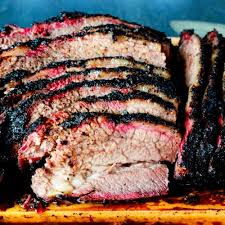

Sixteen Hour Brisket

Slow smoked to perfection
Slow and low, til the crust is hard and the meat is tender
Ingredients List
- Brisket
- Salt
- Pepper
- Garlic Salt
- Espresso
- Butter
- Trim the larger areas of fat from brisket
- Set smoker to 200 degrees
- Blend togehter salt, pepper, garlic salr, and espresso
- Submerger briket in rub, thoroughly covering
- Check the smoker has reached 200 degrees
- Place brisket on smoker
- Check in every four hours for temperature
- Around 16 hours of cooking the internal temp will be about 205
- Remove brisket, slab on hefty amount of butter
- Wrap in tin foil and let rest at room temp for 30 min
- Remove from tinfoil, slice and enjoy